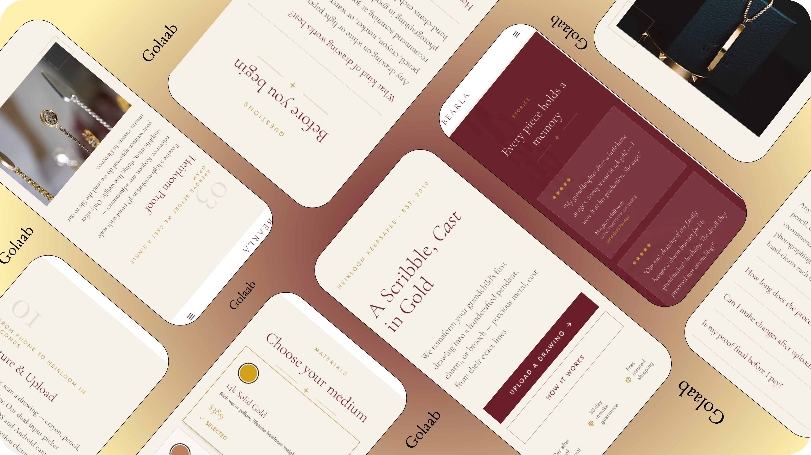
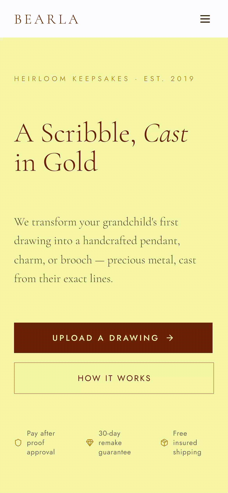

Reduce Hesitation
Increase order conversions at the drawing-approval step by letting buyers see and confirm details before paying.

A custom jewelry platform where buyers upload a child's drawing and annotate specific details. The goal is to make them feel certain about the final manufactured piece before paying.
Increase order conversions at the drawing-approval step by letting buyers see and confirm details before paying.
Minimize back-and-forth DM support queries by automating drawing intent tagging directly in the purchasing flow.
In 2025, operating Golaab Jewelry, I received a request to turn a child's drawing into real, permanent jewelry. Looking at the sketch, the bunny was drawn bigger than the girl and the hair was just tangled loops. I had to decide what those marks meant and cast my read of them in silver, not hers. There was nothing recorded that a bench jeweler could check the piece against later.
I reviewed order patterns and spoke directly with past keepsake buyers to pinpoint where transaction hesitation starts.
Customers want a way to say "this line represents this feature" before their memory is permanently set in silver.
Pre-checkout messaging threads are chaotic, causing buyers to drop off due to delays in getting simple detail clarifications.
On hesitation: "She hesitated and asked a lot of questions — not about price, but because she had no way of knowing what the final piece would look like before committing."
On uploading: "Strangers testing the initial live site in Calgary got stuck at step 1 because they didn't know what counted as a good enough photo."
To bridge the communication gap, I designed a 4-step customization flow centered around a Tap-to-Pin annotation canvas. This lets buyers drop pins directly on their uploaded drawings to label key details before committing to a final purchase.
Automatically adjusting contrast to remove paper background shadows.
Tapping specific parts of the drawing to attach quick text notes.
Choosing metal materials and previewing the finish style.
Reviewing the final layout and notes summary before checking out.
Set minimum 48px touch targets for dropping pins, and used slide-up entry panels so the keyboard doesn't cover sketches.
The coordinates are saved directly with the drawing file, showing bench jewelers exactly where instructions apply.

I tested the initial fast-checkout version as a live site in Calgary at Carya Market. The test highlighted critical psychological barriers that informed the annotation update.

What broke: People hesitated right at the photo step. They weren't sure what counted as a good photo, and were afraid something meaningful to them would just look like a smudge.

What I learned: Adding the Tap-to-Pin annotation step increased interaction effort, but it removed the psychological worry. Letting customers explain their sketch built purchase confidence.